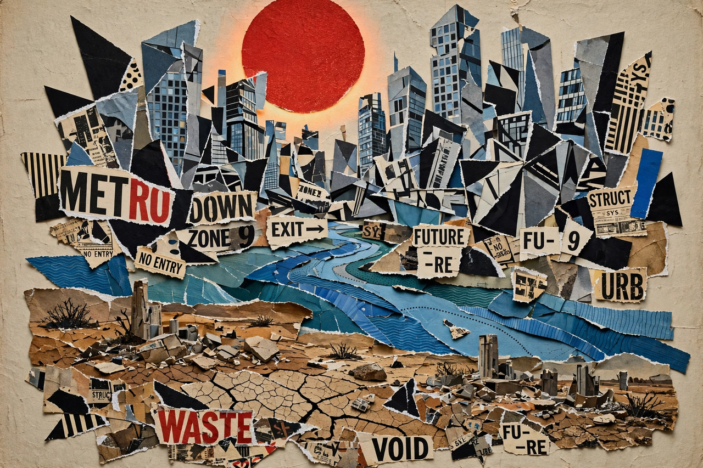

From Wikipedia, the free encyclopedia
| Period | c. 1890s – 1940s |
|---|---|
| Precursors | French Symbolism, Whitman, Browning, Hopkins |
| Key figures | Ezra Pound, T. S. Eliot, H.D., Wallace Stevens, William Carlos Williams, Marianne Moore |
| Signature work | The Waste Land (1922) |
Modernist poetry refers to poetry written, mainly in Europe and North America, between about 1890 and 1950 in the tradition of modernist literature. It broke decisively with Victorian conventions: modernists favoured free verse over regular metre, dense allusion and juxtaposition over continuous narrative, and the concrete image over abstract statement, in an effort — in Ezra Pound's slogan — to "make it new".

Modernist poems collage the voices and wreckage of the modern city.
Modernist poetry grew from French Symbolism (Baudelaire, Mallarmé), the dramatic monologues of Browning, the sprung rhythm of Gerard Manley Hopkins, and the free verse of Walt Whitman. In London in 1912 Pound launched Imagism with H.D. (Hilda Doolittle) and Richard Aldington, demanding direct treatment of the "thing", economy of words, and composition by musical phrase rather than metronome. Amy Lowell publicised the movement in America. Pound's editorial shaping of younger poets — famously cutting T. S. Eliot's The Waste Land to its final form — made him the movement's impresario.
Eliot's The Waste Land (1922) — a fragmented vision of post-war Europe pieced from myth, scripture, popular song and several languages — became modernism's defining poem, alongside his earlier "The Love Song of J. Alfred Prufrock" (1915) and the later religious sequence Four Quartets. Wallace Stevens pursued philosophical meditation in Harmonium (1923), while William Carlos Williams championed an American idiom and the local ("no ideas but in things") in Spring and All and the epic Paterson. Marianne Moore's syllabic, collage-like poems, the Harlem Renaissance verse of Langston Hughes, and later W. H. Auden extended the movement in new directions.
Hallmarks include fragmentation, multiple voices, mythic parallels (Eliot's "mythical method", borrowed from Joyce's Ulysses), learned allusion, irony and difficulty. Reacting against modernist obscurity, mid-century movements such as confessional poetry kept its psychological candour while restoring plainer speech; its techniques — collage, free verse, juxtaposition — remain the default resources of contemporary poetry.